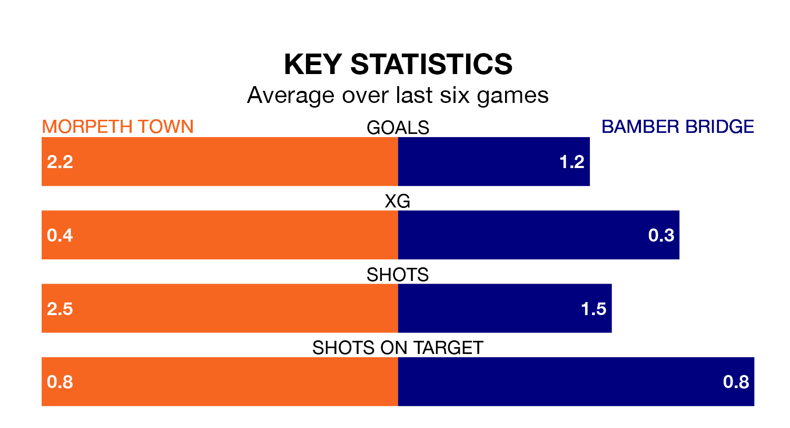

Bamber Bridge make the journey to play Morpeth Town on Saturday looking to pick up points to end their four-game losing streak.
Bamber Bridge's struggles have left them with just four points from their last six Northern Premier League matches, while their opponents have earned 10 from a possible 18.
With 56 goals in 29 games so far this season, Morpeth are scoring more than average in the league with 1.9 goals per game. But they are conceding more than average too, letting in 56 goals at a rate of 1.9 per game.
Bamber Bridge, meanwhile, are below average scorers, with 1.6 goals per game, compared to a league average of 1.7. They have conceded 1.9 goals per game.
In the last 10 years, Morpeth and Bamber Bridge have played each other on seven occasions. Morpeth won one of them, Bamber Bridge four, and they drew twice.
On average, Morpeth scored 1.3 goals and Bamber Bridge 2.1 in those matches.
Their last meeting was on September 23, when they played out a 3-3 draw.
The away team are 16th in the table after 28 games, of which they have won seven and drawn 11, earning 32 points.
Town are four places ahead of Bamber Bridge in 12th, with 11 wins and eight draws putting them on 41 points.
Morpeth's last match was on February 3, a 4-3 loss against Atherton Collieries.
Bamber Bridge lost 2-1 against Macclesfield last time out, also on February 3.
Updated: 11:43 (UTC), 08/02/24